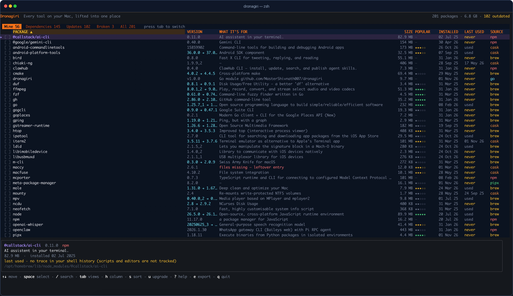

Six managers, one list
Homebrew formulae and casks, npm globals, pipx tools, Cargo crates, RubyGems and go install binaries, side by side.
Dronagiri is a terminal package manager for macOS. It finds everything you
installed with brew, npm, pipx,
cargo, gem and go install, then shows
the real size, install date, last-used evidence, dependencies and the one
command that removes it.
go install github.com/MasterShivnath007/dronagiri@latest
No sudo. No telemetry. Reads your machine, writes only to ~/Library/Caches/dronagiri.

Package managers each know a fragment of your Mac. Dronagiri joins the fragments and turns them into a list you can actually act on.
Homebrew formulae and casks, npm globals, pipx tools, Cargo crates, RubyGems and go install binaries, side by side.
One batched du over every install path, with a running total. Sort by size and see what is actually eating the disk.
Mine hides the libraries that arrived with something else. Dependencies shows each one and names the packages that need it.
Spotlight metadata for apps and timestamped shell history for commands. When there is no evidence, it says never instead of guessing.
Select with space, press d, then confirm twice. Removal always uses the manager's own uninstall command — no --force.
Upgrade a row with u, find manager entries whose files are gone, and write the current view to ~/Downloads with e.
brew list is a good command, but it only sees one manager and one dimension: names. Dronagiri adds the context you need before you delete something.
| Capability | brew list | Dronagiri |
|---|---|---|
| One list across six package managers | No | Yes |
| Real on-disk size and running total | No | Yes |
| Install date and last-used evidence | No | Yes |
| Separates your tools from dependencies | Manual | Yes |
| Names the packages that need a library | No | Yes |
| Finds manager entries whose files are gone | No | Yes |
| Multi-select removal with two confirmations | No | Yes |
| Per-package updates | Upgrade all | Yes |
| Export the current view as text | No | Yes |
| Works over SSH, no GUI required | Yes | Yes |
Short, practical guides for the jobs Dronagiri makes easier — useful even if you never install it.
Measure the Cellar and Caskroom, separate dependencies from the tools you chose, and reclaim space without breaking anything.
Read the guide →Check dependents, remove orphaned libraries, handle casks, and know exactly when --zap is a data-deleting operation.
Arrow keys or j/k to move, tab to change views, h/H to pick a column, s to sort. The footer always shows what is available.
Every manager is read through its own documented interface. Dronagiri is an inspector, not a replacement — it never hides a package from the manager that owns it.
Homebrew uses brew info --json=v2 --installed; npm uses npm ls -g --json; pipx, Cargo, RubyGems and Go have their own commands. Missing managers are skipped.
A single batched du measures install paths. For Homebrew, brew deps supplies the real runtime linkage, then the graph is inverted so each library can name its dependents.
Removal and upgrades are delegated to brew, npm, pipx, cargo, gem or a confirmed binary delete. Dronagiri adds no --force.
Nothing is removed until you press d and confirm twice in bordered dialogs. The first window lists every package and the space freed; the second is a last-chance warning. Dependencies are called out, macOS-owned packages are marked protected, and the final command is the manager's own. d to remove in the footer turns red whenever a selection is active.
Dronagiri is a single binary. It installs nothing into your system and needs no account. Pick whichever route matches your setup.
Requires Go 1.24 or newer. Go puts the binary in ~/go/bin.
go install github.com/MasterShivnath007/dronagiri@latest
# if ~/go/bin is not on your PATH:
echo 'export PATH="$PATH:$(go env GOPATH)/bin"' >> ~/.zshrc
source ~/.zshrc
dronagiriGrab the archive for your Mac from the latest release: Apple Silicon is arm64, Intel is amd64.
tar -xzf dronagiri_1.0.0_darwin_arm64.tar.gz
sudo mv dronagiri /usr/local/bin/
dronagiri
# only if Gatekeeper blocks the first run:
xattr -d com.apple.quarantine /usr/local/bin/dronagiriDownloaded binaries are not notarized by Apple, so macOS may ask for confirmation once.
Useful if you want to read the code first or run a development build.
git clone https://github.com/MasterShivnath007/dronagiri.git
cd dronagiri
make install
# or, without make:
go build -o dronagiri .
sudo mv dronagiri /usr/local/bin/dronagiri --version # dronagiri 1.0.0
All releases
If your question is not here, open an issue on GitHub — it also helps the next person who searches for it.
Yes. It is MIT-licensed open source, with no account, subscription or telemetry. You can read every line, build it yourself, or download a signed release binary.
Homebrew formulae and casks, npm global packages, pipx tools, Cargo crates, RubyGems and binaries installed with go install. Managers that are not installed are skipped rather than treated as errors, so a Mac with only Homebrew still works.
brew list?brew list only sees Homebrew and only prints names. Dronagiri combines six managers into one table and adds real on-disk size, install dates, last-used evidence, dependency attribution, broken-entry detection, multi-select removal, per-package updates and export.
Yes. Releases include separate arm64 (Apple Silicon) and amd64 (Intel) builds. The minimum is macOS 13 Ventura, and it runs over SSH without a GUI.
sudo?No for scanning or listing. Removing some casks can ask for your password because macOS owns those files. Dronagiri never deletes package files itself — it calls the manager that installed the package.
No. There is no telemetry. Popularity stars come from Homebrew's public install analytics; the datasets are downloaded in the background and cached locally for 14 days. Nothing about your installed packages is sent anywhere.
It uses two honest signals: Spotlight's kMDItemLastUsedDate for .app bundles, and timestamped shell history for commands. When neither exists it shows never — meaning no trace in your history, not proof that the tool is unused. The detail panel spells this out.
Not yet. Today the options are go install, a release binary, or building from source. A Homebrew tap is on the roadmap.
In the Ramayana, Hanuman cannot tell which herb will save Lakshmana, so he lifts the entire Dronagiri mountain and carries it to the battlefield. That is the idea here: instead of hunting through six package managers, lift the whole inventory into one place and choose from it.
Dronagiri is a one-person project. The code stays MIT and free. If it saved you an afternoon, a star, a share or a sponsorship keeps it maintained.
Recurring support via GitHub Sponsors. Starring and sharing also help. There is no paywalled feature in the current release. One-time Razorpay support is temporarily paused while the payment page is sanitised.
A 60-minute remote session using Dronagiri to find dead weight, broken entries and safe removals on your Mac.